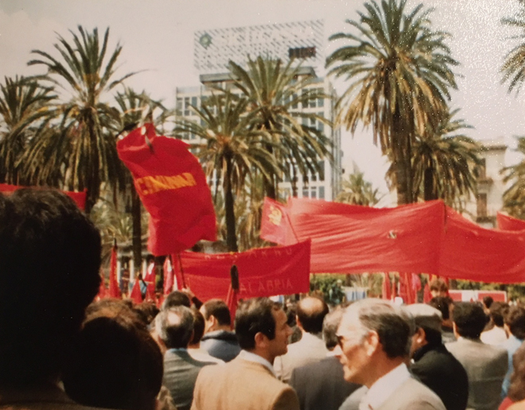
A trip to Palermo to visit college friends James Schofield and Janette Ringsell who were then teaching English in Sicily - flying out from Luton with Janette's mother Cathy. We arrived on the day after the murder of Pio La Torre (Communist 'mayor' of Palermo) by the Mafia - hence the protests and red flags in the main square.
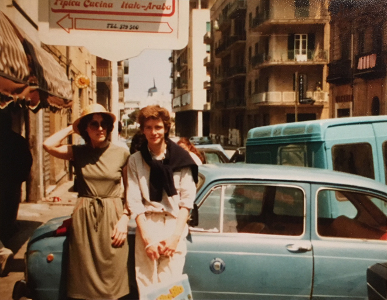
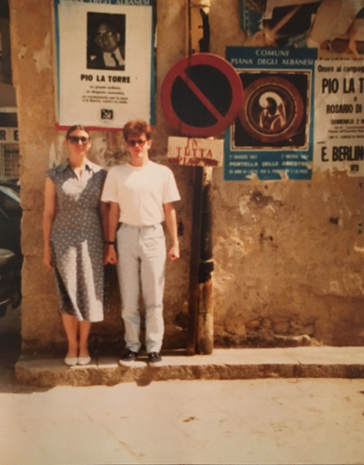
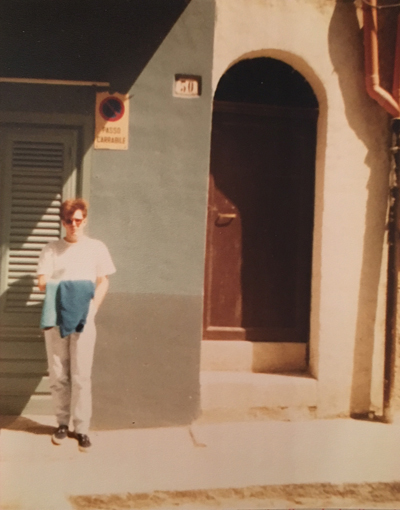
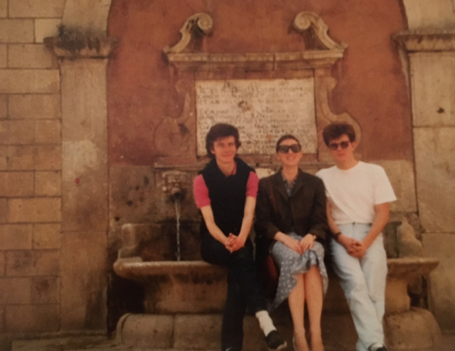
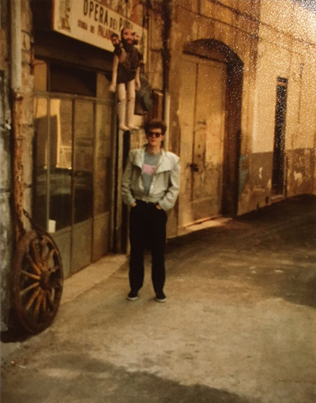
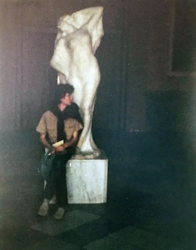
While in Palermo I was able to attend a performance of Bellini's I Capuleti e I Montecchi at the Teatro Massimo - a resplendent opera house built between 1874-1897. Dedicated to King Victor Emanuel II, it is the largest opera house in Italy and renowned for its perfect acoustics.
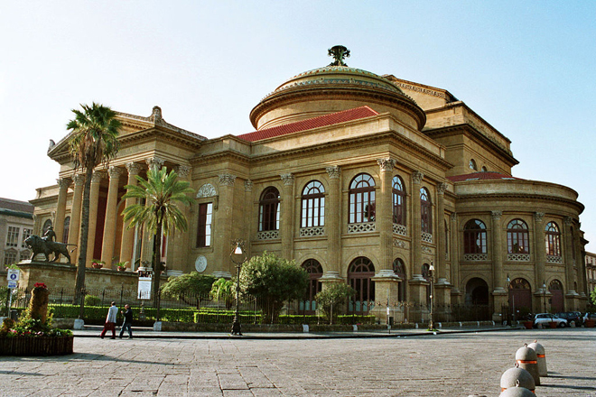
Santa Rosalia is the patron saint of Palermo as, in 1624 when a plague beset Palermo, she appeared to a hunter, to whom she indicated where her remains were to be found. She ordered him to bring her bones to Palermo. The hunter climbed the mountain and found her bones in the cave as described. After her remains were carried around the city three times, the plague ceased. After this Saint Rosalia was venerated as the patron saint of Palermo and a sanctuary was built in the cave where her remains were discovered.
In 1825, geologist William Buckland was in Palermo on holiday and asked to see the bones of the saint. After examinating the relics the geologist determined them to be "non-human", in fact he declared the relics were actually the bones of a goat. According to Buckland, priests said that the saint would not let him see her remains because he was not a Catholic Christian, and locked the relics away from people's eyes.
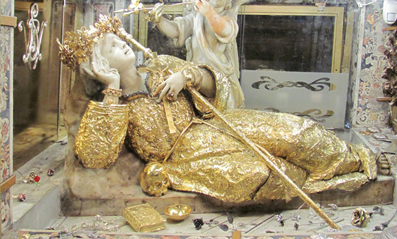
The Capuchin Catacombs of Palermo (Catacombe dei Cappuccini) are burial catacombs which provide a somewhat macabre tourist attraction. The monastery outgrew its original cemetery in the 16th century and monks began to excavate crypts below it. In 1599 they mummified one of their number, recently dead brother Silvestro of Gubbio who was the first occupant.
Bodies were dehydrated on the racks of ceramic pipes in the catacombs and sometimes later washed with vinegar. Some of the bodies were embalmed and others enclosed in sealed glass cabinets. Originally the catacombs were intended only for the dead friars. However, in the following centuries it became a status symbol to be entombed into the Capuchin catacombs.
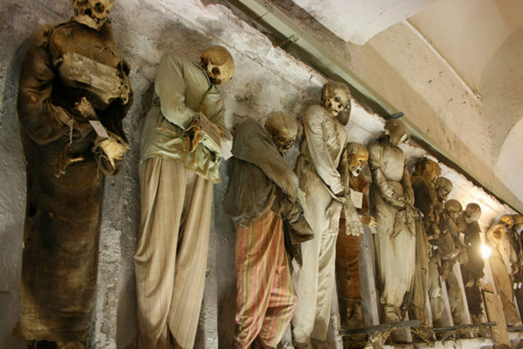
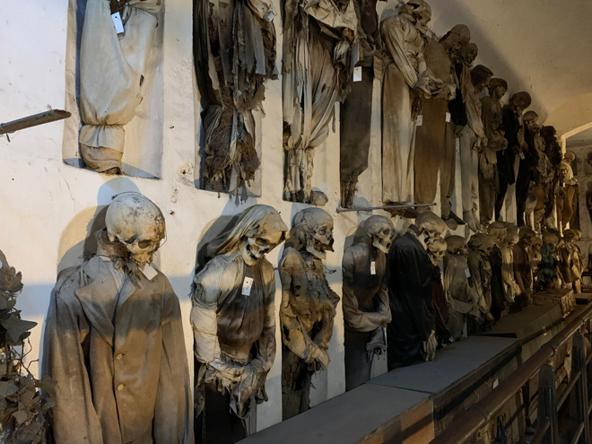
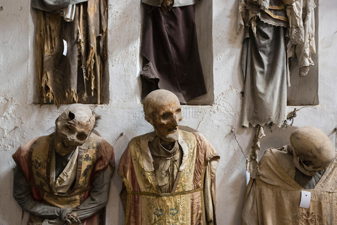
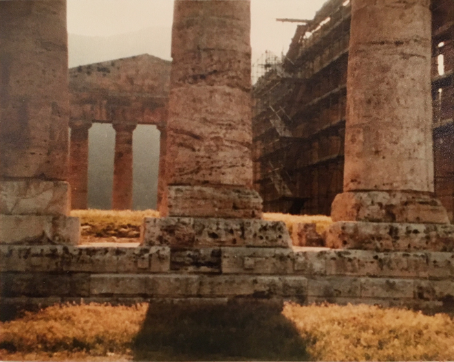
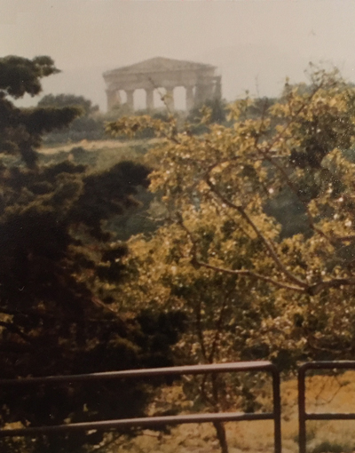
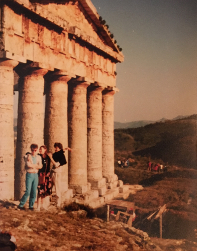
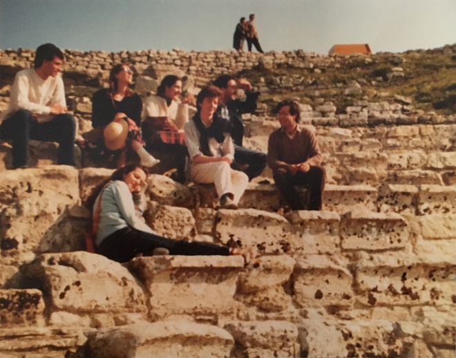
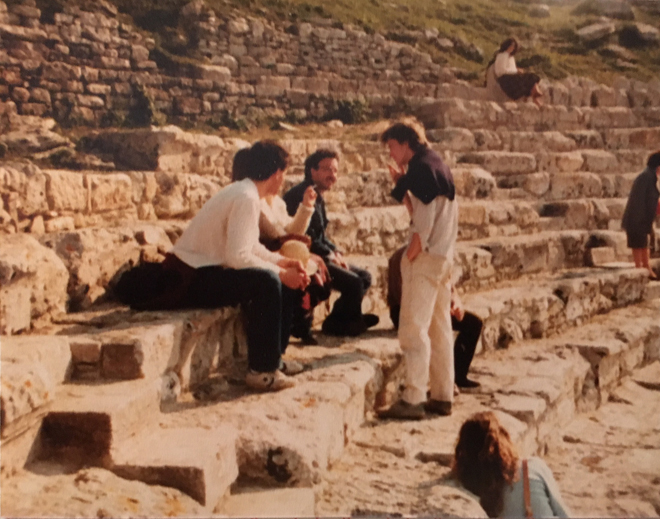
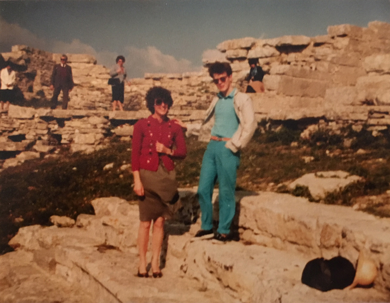
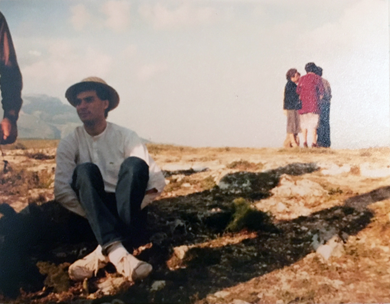
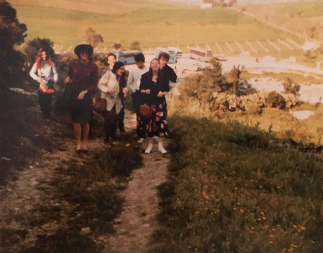
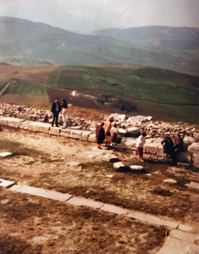
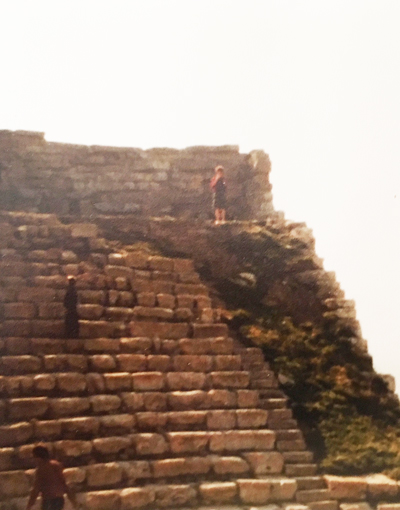
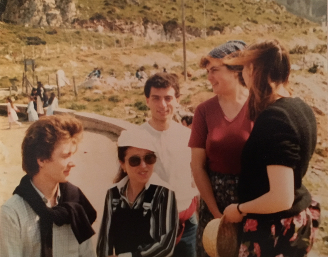
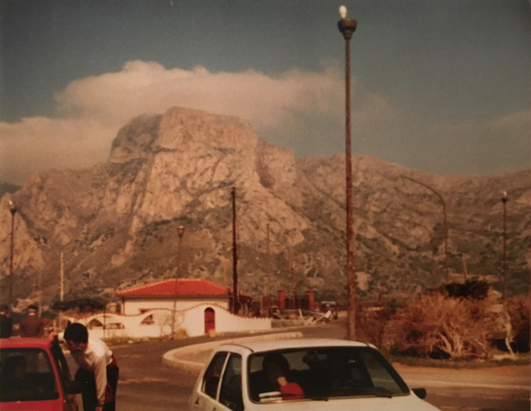
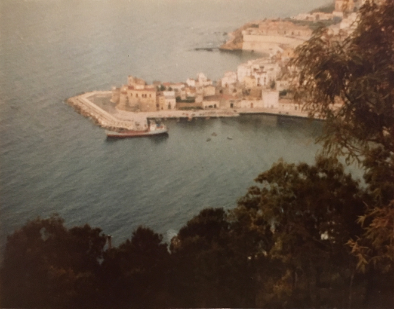
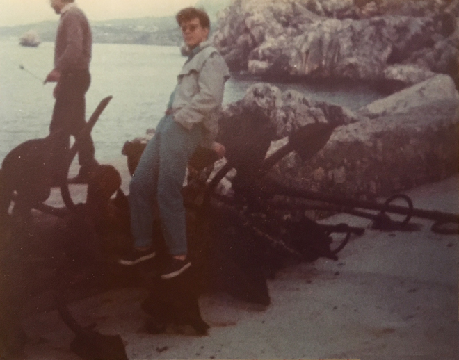
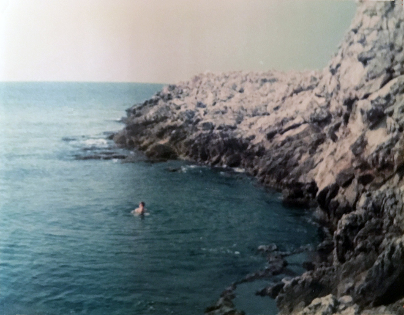
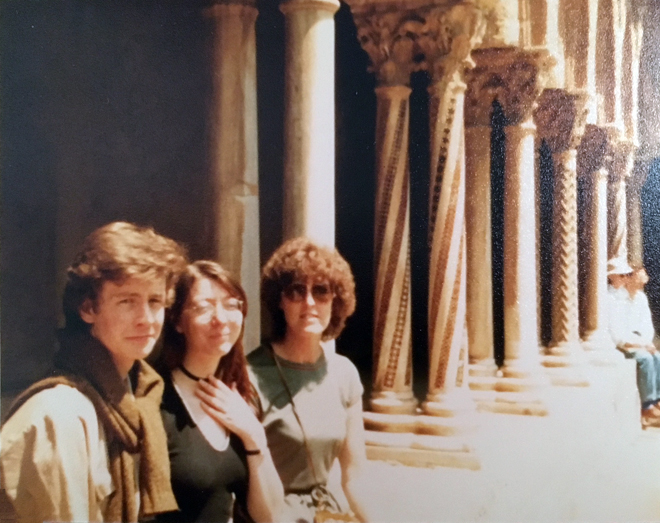
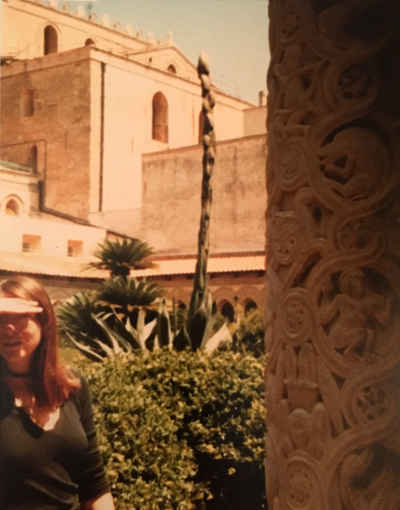
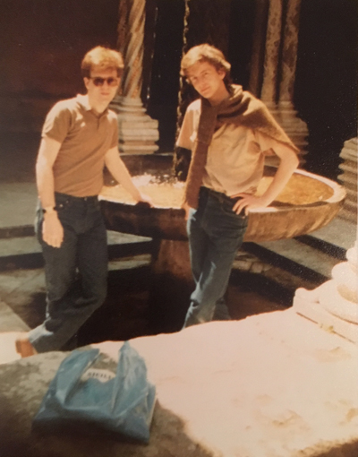
The apartment in which James and Janette lived was very noisy: it was directly over a road crossing and all Italian drivers seemed to think sounding their car horn was more important than slowing down at the junction. On our final evening we bought pizza to eat in the kitchen. One piece was dropped on the floor and we obviously thought nothing of washing it off and hanging it out on the washing line to dry ...
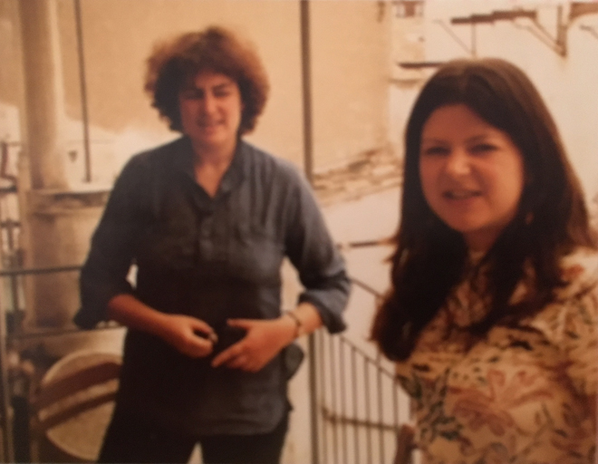
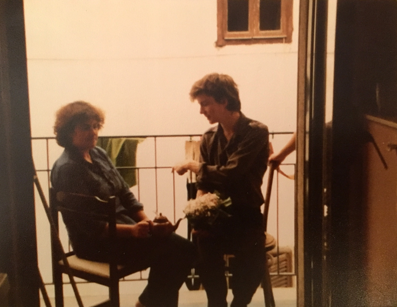
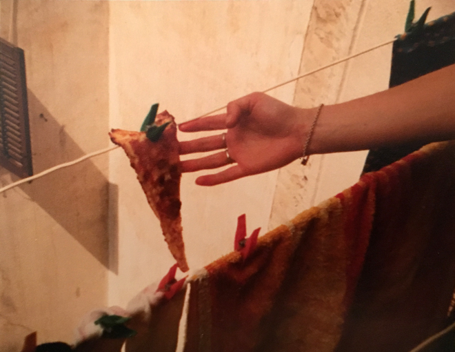
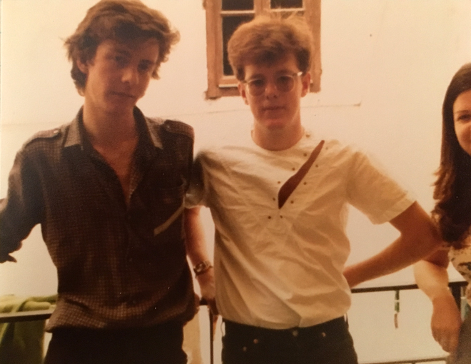